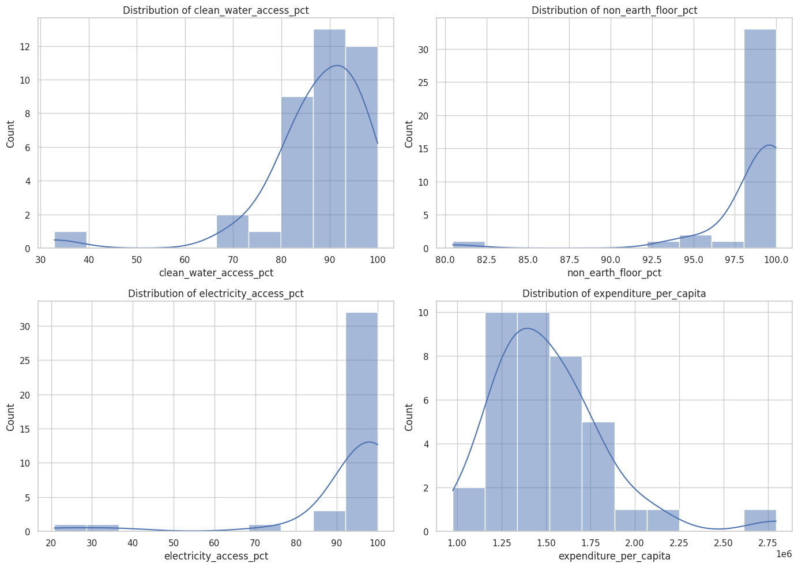
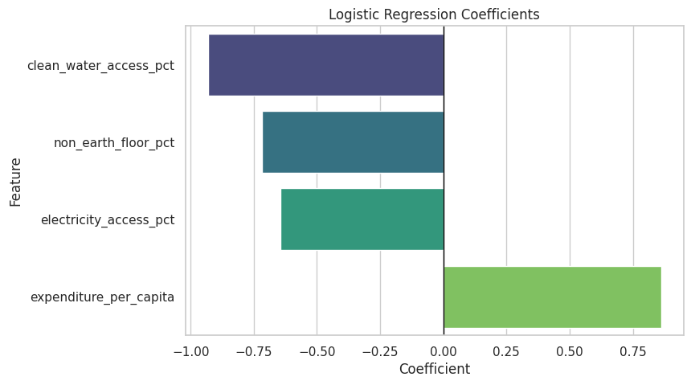

Housing Vulnerability in Indonesia Using Socioeconomic Infrastructure Data and Logistic Regression
This project applies Logistic Regression to classify housing vulnerability across Indonesian provinces using socioeconomic and infrastructure indicators published by Badan Pusat Statistik (BPS).
Python · Pandas · Scikit-learn · Matplotlib · Seaborn · Google Colab
Problem & Motivation
Housing quality is a critical indicator of social welfare and development. Identifying provinces with relatively vulnerable housing conditions is essential for supporting evidence-based policy analysis, regional development planning, and targeted infrastructure intervention.
Dataset Overview
- Source: Badan Pusat Statistik (BPS)
- Year: 2025
- Level: Province
- Indicators: Clean Water Access, Electricity Access, Non-earth Floor, Expenditure per Capita
- Label: Housing Vulnerability (Binary, benchmark-based)
Exploratory Data Analysis
Exploratory Data Analysis (EDA) was conducted to examine the distribution and variability of socioeconomic and infrastructure indicators across provinces prior to model training.
The distribution plots indicate that most provinces exhibit high access to basic infrastructure such as clean water, electricity, and non-earth flooring, with values concentrated near the upper range. In contrast, expenditure per capita shows a wider spread, highlighting significant socioeconomic disparities across Indonesian provinces. This contrast motivates the inclusion of both infrastructure and economic indicators in the classification model.
Model Interpretation
To ensure transparency and interpretability, Logistic Regression coefficients were analyzed to understand how each indicator contributes to housing vulnerability.
The coefficient plot shows that clean water access, electricity access, and non-earth floor percentages have negative coefficients, indicating that better infrastructure conditions reduce the likelihood of housing vulnerability. Meanwhile, expenditure per capita has a positive coefficient, reflecting its strong role in differentiating provinces under the benchmark-based labeling approach. Overall, the model highlights infrastructure access as a key protective factor.
Model Evaluation
Accuracy
1.00
Recall (Vulnerable)
1.00
F1-score
1.00
The confusion matrix indicates perfect classification performance on the test set, with no false positives or false negatives. All provinces labeled as vulnerable and non-vulnerable were correctly classified. However, this result should be interpreted with caution due to the limited number of provinces used for evaluation, which may lead to optimistic performance estimates.
Key Insights
- Access to basic infrastructure significantly reduces housing vulnerability.
- Socioeconomic capacity remains an important differentiating factor.
- Logistic Regression provides interpretable and policy-relevant insights.
Limitations & Future Work
This study relies on aggregated provincial-level data and a limited sample size. Future work may incorporate time-series analysis, additional housing indicators, or finer spatial resolution to improve generalizability.